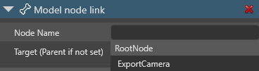

モデルファイルを使ったカメラのアニメーション
初級 アーティスト
他のエンティティと同様に、.3ds、.fbx、.obj などの3Dモデルファイルからアニメーションをインポートして、カメラをアニメーションさせることができます。
Note
モデルファイルを使ってカメラをアニメーションさせるには、まず、モデリングツール（Maya、3ds Max、Blenderなど）を使ってアニメーションをベイクする必要があります。 Stride は、ターゲットカメラを使ったカメラアニメーションには対応していません。
カメラが独立して移動する場合、最も簡単な方法は、カメラアニメーションを別ファイルとしてエクスポートし、アニメーションの Root Motion オプションを有効にしてから、カメラ、アニメーション、アニメーションスクリプトを同じエンティティに追加することです。アニメーションに FOV アニメーション、近・遠平面アニメーションが含まれている場合、Stride カメラはそれに応じて更新されます。この方法では、モデルやスケルトンは必要ありません。
他のアニメーションと連動してカメラを動かしたい場合、例えば、独自のモデル、スケルトン、アニメーションを持つカメラマンがカメラを持っている場合は、モデルノードリンクコンポーネントを使って、カメラのエンティティをカメラマンの動きに連動させます。
カメラを個別にアニメーションさせる
これを行うには、プロジェクトに以下のアセットが必要です。
- アニメーションさせるカメラを表すカメラ エンティティ
- モデリングツールから個別にエクスポートされた、カメラのアニメーション
- アニメーションを再生するためのアニメーション スクリプト
アセットビューで、カメラ用のアニメーションアセットを選択します。
Note
アニメーションのインポート方法については、アニメーションのインポートを参照してください。
プロパティグリッドで、Root Motion を有効にします。

Root Motion を有効にすると、Stride は ルート ノード アニメーション をスケルトンに適用する代わりに、アニメーションの追加先エンティティの TransformComponent に適用します。
Note
Skelton にスケルトンが指定されていない場合は、Root Motion が無効になっていても、Stride は常に TransformComponentにアニメーションを適用します。
シーンエディターで、カメラを持っているエンティティを選択します。
Note
カメラを追加する方法については、カメラを参照してください。
プロパティグリッドで [Add component] をクリックし、Animations を選択します。
Game Studio は、エンティティにアニメーションコンポーネントを追加します。

Animations の横にある
 （Add）をクリックして、名前を入力します。
（Add）をクリックして、名前を入力します。Game Studio はリストにアニメーションを追加します。
追加したアニメーションの横にある
 （Select an asset）をクリックします。
（Select an asset）をクリックします。すると、Select an asset ウィンドウが開きます。
カメラに適用したいアニメーションを選択して、[OK] をクリックします。
[Add component] をクリックして、カメラアニメーションに使用するアニメーションスクリプトを選択します。

Game Studio は、エンティティにコンポーネントを追加します。
Note
アニメーションスクリプトを追加する方法については、アニメーション スクリプトを参照してください。
スクリプトコンポーネントで、Animations の横にある
（Add）をクリックします。
[Clip] の横にある
（Select an asset）をクリックします。すると、Select an asset ウィンドウが開きます。
カメラに適用したいアニメーションアセットを選択して、[OK] をクリックします。
実行時に、カメラはアニメーションを使用します。アニメーションに FOV アニメーションや近・遠平面アニメーションが含まれている場合、Stride はカメラをそれらに応じて更新します。
カメラを別のモデルのノードにアタッチする
カメラを他のモデルと一緒に動かすには、カメラ用のエンティティを別途作成し、モデルノードリンクコンポーネントを使ってエンティティを適切なノードにリンクします。
これを行うには、プロジェクトに以下のアセットを追加する必要があります。
- アニメーションさせたいカメラを表すカメラエンティティ
- カメラをアタッチするモデル
- モデルに適合するスケルトン
- モデルに適用するアニメーション
- アニメーションを再生するためのアニメーション スクリプト
Note
この方法を使用すると、FOV および近・遠平面アニメーションは無視されます。
アセットビューで、カメラをリンクしたいモデルを選択します。Skeleton の横にモデルと適合したスケルトンが指定されていることを確認してください。
カメラをアタッチするエンティティに、アニメーションに必要なモデル、アニメーションクリップ、アニメーションスクリプトのコンポーネントがあることを確認します。
Note
これらを追加する方法については、アニメーションを参照してください。
カメラエンティティを選択した状態で、プロパティグリッドで [Add component] をクリックし、Model Node Link を選択します。

Note
TransformComponent は、モデルノードの位置にオフセットを追加します。オフセットを追加したくない場合は、TransformComponent が
0,0,0に設定されていることを確認してください。Game Studio は、エンティティにモデルノードリンクコンポーネントを追加します。

Target の横にある
をクリックし、カメラをリンクするモデルを持つエンティティを選択してください。または、Target フィールドを空白にしておきます。エンティティツリーで、アニメーションさせたいカメラエンティティを、モデルを含むエンティティにドラッグします。Stride は、エンティティを親エンティティのモデルにリンクします。

Node Name フィールドで、カメラをリンクしたいノードを選択してください。

Note
リンク先のエンティティは、モデルが実行時に表示されない場合ても、スケルトンを持つモデルを持っている必要があります。
実行時に、カメラはアニメーションを使用します。